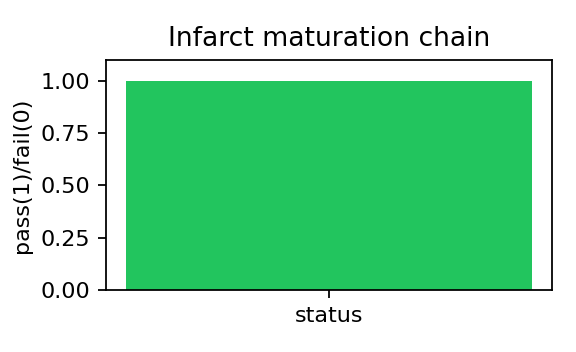

Test path: tests/test_infarct_maturation.py::test_infarct_state_progression
What simulation is run: Checks inflammation->provisional->scar progression trends and bounds.
Status: PASS
Result plot

Why this test matters
This numerical verification test checks solver stability/consistency for one component before coupling it into multiscale fibrosis simulations.